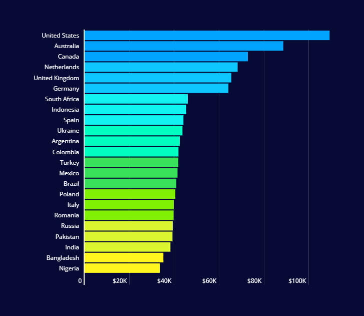
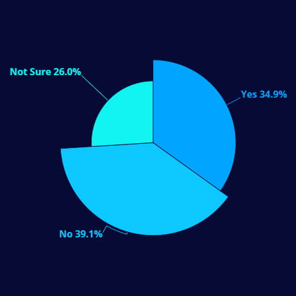
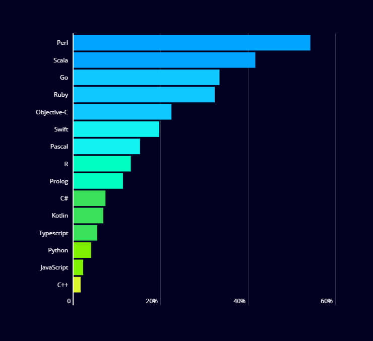

Професія - "ІТ-шник"
Коломієць Анастасія 9-А
Мета:
скласти довідник професій, які можна набути в галузі інформаційних технологій, які є найприбутковішими, найпопулярнішими, з’ясувати, які навички повинні опанувати представники цих професій, які є особливості представників цих професій в Україні та закордоном.
Професії, яких можна набути в галузі інформаційних технологій:
- Спеціалст з кібербезпеки
- Програміст
- Тестувальник ПЗ
- Менеджер інтернет проєктів
- WEB-програмст
- ERP-програміст
- Game developer
- Front-end developer
- Back-end developer
Професії в ІТ є одними з найбільш прибуткових та перспективних професій в Україні
Українські IT-спеціалісти за рік в середньому заробляють 43,6 тисячі доларів.
Професіонали в сфері ІТ мають опанувати такі навички:
-
Tech-skills
Технічні навички (знання мов програмування, вміння використовувати їх)
-
Soft-skills
Вміння працювати в команді, здатність вирішити будь-які задачі
-
Career-skills
Резюме, вміння представити себе, бажання йти по кар'єрних сходинках
-
Власні характеристики
Мотивація, чесність, інтелект тощо
Середня річна зарплата американських IT-спеціалістів є найвищою та складає понад 109 тисяч доларів. Середня річна зарплата IT- фахівців всіх країн світу складає майже 54,5 тисячі доларів, повідомляється у дослідженні Hackerrank.
Лише 35% розробників вважають, що їм платять справедливо, а 39% вважають, що їм платять несправедливо в порівнянні з однолітками. Решта 26% просто не впевнені.
Оскільки поширення зарплат стало нормою на сайтах Glassdoor та LinkedIn, розробники отримали безпрецедентний доступ до оцінок зарплати. Багато в чому цей зсув є позитивним, зазначають в HackerRank.
  ІТ компанії можуть забезпечити своїм працівникам комфортні умови праці
- Компанії можуть надавати своїм працівникам житло, якщо ті живуть далеко від місця роботи.
- Якщо ви ще студент, деякі компанії залюбки навчають своїх працівників, роблячи їх більш кваліфікованими та компетентними.
- Компанії зазвичай забезпечують комфортний трансфер. Якщо ви переїжджаєте ближче до місця роботи, ваша компанія може допомогти вам з перевезенням речей.